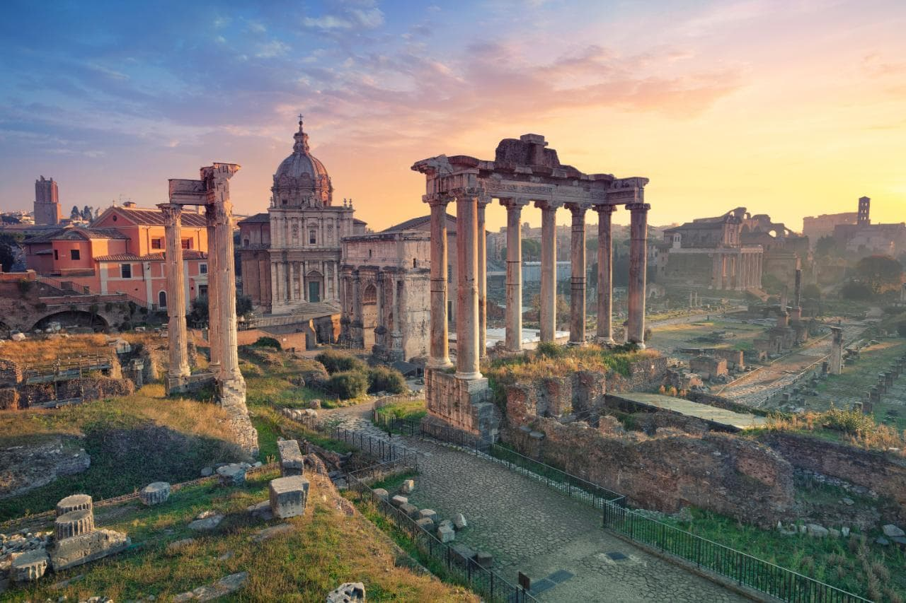
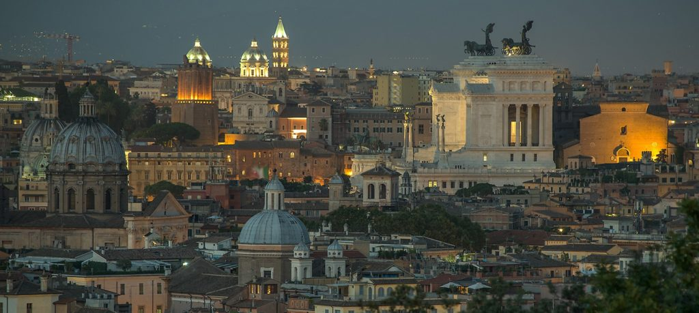
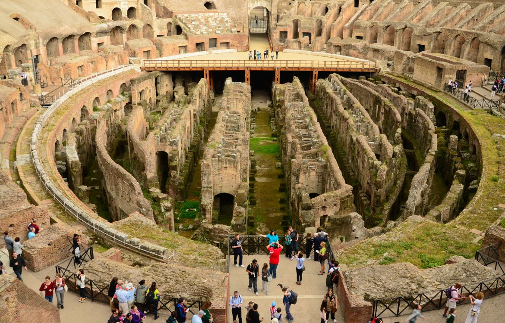
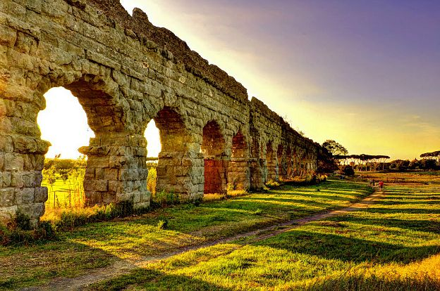

Rome
At my third destination: Rome, of the numerous locations I'm excited to see, here are three of them!
1. Janiculum Terrace- The picture below depicts the view you can get of the city of Rome if you were standing up on this terrace! Isn't it so fantastic? Why wouldn't anyone want to come up here, am I right? This shall be an essential location in my tour.

2. Colosseum- This place has the remains of the massive stone amphitheatre built around A.D. 70-72! Isn't that old? Now it's a popular tourist destination and it's an iconic symbol of Rome. I must come here in my venture into Rome's history.

3. Appia Anitca Regional Park- This amazing park combines nature trails with historic monuments and archeological sites! While walking or biking along the old Roman road, you can see places like the Villa Capo di Bove, the Tomb of Cecilia Metella, and the Tombs of Via Latina. Now that's cool! It'd be so cool to bike along this trail!
